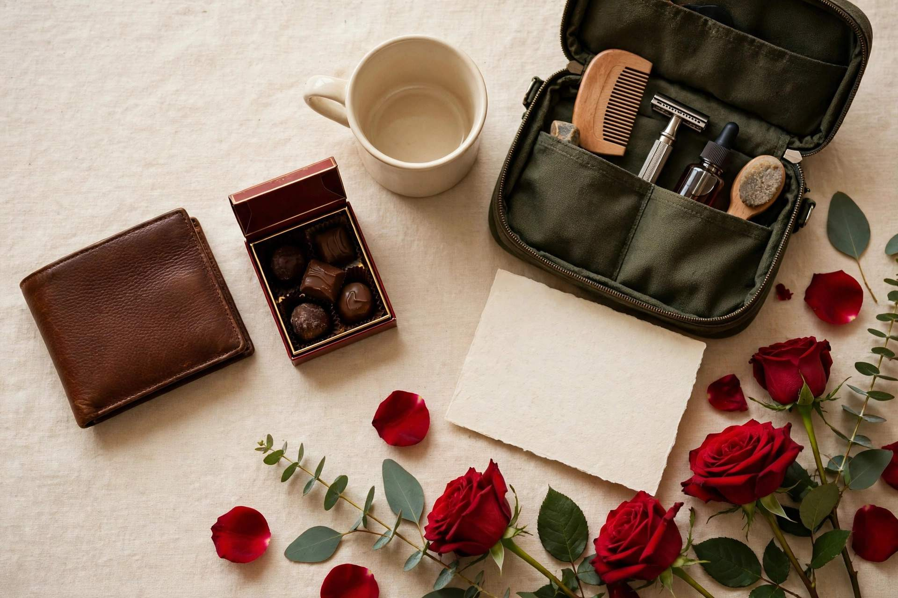

25 Valentine’s Gift Ideas for Him He’ll Actually Love
28 Nov 2026 · Kashif Hameed

Valentine’s Day for him is the hardest gift to buy — he says he wants nothing, until you hand him something thoughtful. These are 25 Valentine’s gift ideas for him he will actually love, for a husband, boyfriend or dad, from $5 to $50.
Who this is for, and what it costs
This guide is for anyone buying a Valentine’s gift for a man you care about — your husband, boyfriend, fiancé, dad or best friend — in the United States, the United Kingdom or Canada. Valentine’s Day 2027 falls on Sunday 14 February, so a gift that pairs with a shared evening at home works beautifully.
Cost level: low to medium. Most ideas are around $15 to $50 (roughly £12 to £40, or $20 to $65 Canadian). You can put together a thoughtful gift for around $25, a generous one for around $50, or combine two small ideas into a gift set. Time: about 30 minutes to choose and order, plus 15 minutes to wrap nicely.
The 25 ideas
Personal and romantic
- An engraved wallet (around $25–$45). A slim leather wallet with his initials, or a date that matters to you both.
- A handwritten love letter (around $5). Proper paper, a good pen and a few honest sentences — the cheapest idea here, and the one he keeps longest.
- A DIY photo book (around $15–$25 to print). Your best photos from the last year, printed and bound.
- An engraved watch (around $30–$50). A simple watch with a short message or anniversary date on the back.
- A deck of reasons (around $5–$10). A pack of cards, each with one reason you love him.
Food and drink he will enjoy
- A box of good chocolates (around $15–$25). A small box of proper truffles — quality beats quantity here.
- A coffee-lover’s box (around $25–$40). Good beans, a filter or a French press, and his favourite roast.
- A craft beer or whisky tasting set (around $20–$40). A few small bottles to try together on Valentine’s evening.
- A cook-together kit (around $20–$35). Everything for one meal — pasta, sauce, parmesan and a candle — for a date night at home.
- A personalised mug (around $10–$20). His name or an inside joke — the mug he reaches for every morning.
Practical gifts he will use
- A grooming kit (around $20–$35). A wash bag with a razor, shaving cream and moisturiser — the upgrade he never buys himself.
- A beard-care set (around $15–$30). Beard oil, a balm and a comb — unscented if you are unsure.
- A smartwatch strap (around $15–$30). A leather or fabric strap that makes the watch he already owns feel brand new.
- Noise-cancelling earbuds (around $30–$50). For the commute or the gym — small, useful and used daily.
- A flannel shirt (around $25–$40). A warm flannel in a colour he actually wears — check the label first.
Cosy and relaxing
- A thermal mug (around $20–$35). One that keeps coffee hot on a cold commute, with a lid that does not leak.
- Touchscreen winter gloves (around $15–$25). Warm, with fingertips that work on a phone.
- A hot chocolate and blanket set (around $25–$40). A soft throw, cocoa and marshmallows for a film night.
- A book by his favourite author (around $15–$25). The new one, or the one he mentioned months ago — check his shelf first.
- A puzzle for two (around $15–$30). A 500-piece puzzle of somewhere you have been together.
Experiences to share
- A date-night voucher book (around $5–$10 to make). Twelve vouchers — a film night, a walk, breakfast in bed — he redeems one a month.
- Tickets to a game or concert (around $25–$50). His team or his band — the shared memory is the gift.
- A cooking class for two (around $40–$50 for a basic class). Pasta, sushi or bread-making — a fun evening and a skill to keep.
- A stargazing night kit (around $15–$25). A blanket, a star map and hot chocolate in a flask.
- Breakfast in bed, done properly (around $10–$20). Pancakes, good coffee and orange juice — the simplest gift here, and one of the best.
Supply and shopping list
You do not need to buy everything below — this is a checklist for one gift, plus wrapping. Typical US prices are shown; prices vary by shop and season.
- The gift itself: around $15–$50, as listed above
- Wrapping paper or a gift bag: around $3–$6
- Ribbon or twine: around $2–$4
- A gift tag and a card: around $2–$5
- Tissue paper: around $2–$3
- Optional: a single red rose: around $3–$5
- Optional: a gift box, if the gift is fragile or oddly shaped: around $3–$5
How to choose the right gift, step by step
- Think of one ordinary day in his life. What does he do each day? A gift that fits a real day will be used far more than one that only fits Valentine’s Day.
- Pick one category above. Personal, food, practical, cosy or experience.
- Check what he already has. A look at his desk, wardrobe or shelf tells you what he uses and what is worn out.
- Set your budget before you shop. Decide on $25 or $50, and stick to it — Valentine’s mark-ups are real.
- Buy it early, and wrap it well. Order at least a week before 14 February, so a delay does not leave you empty-handed.
- Give it with a sentence, not just a box. Say why you chose it — the gift becomes a memory, not just an object.
Tips that save time and money
- Buy in late January, not the week of Valentine’s Day — prices rise and engraved items need a few days.
- Pair a bought gift with a free one: a $20 mug plus breakfast in bed feels far more generous than either alone.
- If buying online, check the size and returns policy first — a “one size” shirt is a gamble.
Common mistakes to avoid
- Buying a joke gift as the main gift. A funny mug is fine as an extra, but alone it can feel like you did not try.
- Buying a duplicate. Check whether he already has headphones, a wallet or a watch he loves before you buy another one.
- Choosing a strong fragrance. Cologne is personal — unless you know his favourite, choose unscented.
- Forgetting the card. A gift without a card can feel like a parcel. A short, honest note takes two minutes and makes the gift feel personal.
Variations for different budgets, ages and occasions
Under $25: choose one small idea — the deck of reasons, a mug or the voucher book — and wrap it with a handwritten card. It will feel complete, not cheap.
Around $50: pair two ideas, such as a grooming kit and a coffee box. Two thoughtful items feel generous without being extravagant.
For a husband: lean personal — the photo book, the experience, the engraved watch. For a boyfriend: lean fun — the earbuds, the cook-together kit, the concert tickets. For a dad: lean practical — the flannel shirt, the thermal mug, breakfast in bed.
Frequently asked questions
What is a good Valentine’s gift for a man who has everything? Choose something consumable or experiential — a coffee box, a grooming kit, good chocolates or tickets to a game. It gets used up or remembered, instead of joining a drawer of things he already owns.
How much should I spend on a Valentine’s gift for him? Around $25 is thoughtful for a boyfriend, and around $50 for a husband. A well-chosen $20 gift he actually uses beats a stressed $100 gift that sits in a cupboard — and a handwritten card costs almost nothing and is often the part he keeps.
What are romantic Valentine’s gifts for him that are not cheesy? The least cheesy gifts are the most personal: an engraved watch or wallet with a date that matters to you both, or an experience you share. A short honest note does more than any heart-shaped gadget.
Related posts
- 25 Christmas Gift Ideas for Him He’ll Actually Use
- 25 Thoughtful Gift Ideas for Her She’ll Actually Love
- 25 Stocking Stuffers for Her Under $25 She’ll Actually Love
- 20 Engagement Party Ideas on a Budget That Look Expensive
- 25 Christmas Gift Ideas for Kids by Age They’ll Actually Play With
Last updated: 28 Nov 2026